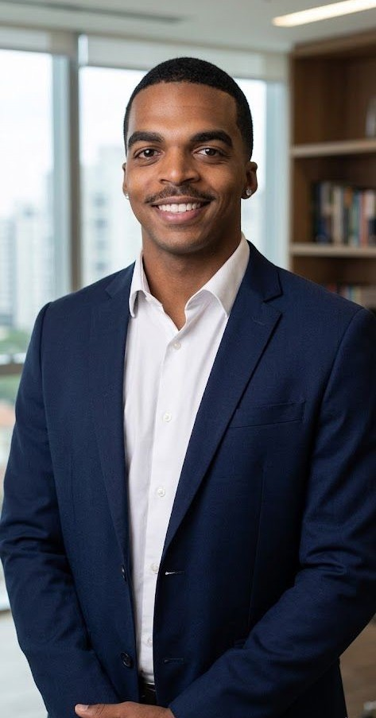
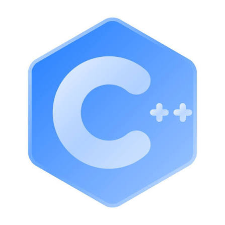
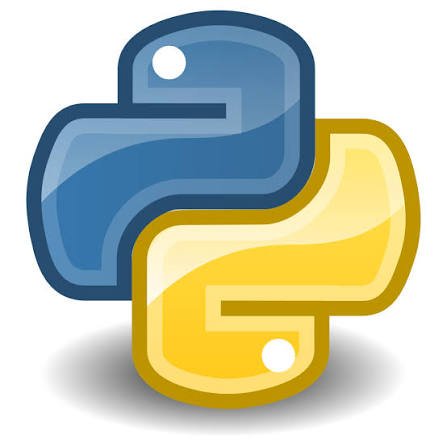
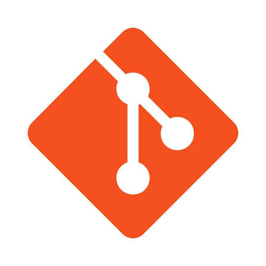

Seja Bem-Vindo ao meu primeiro projeto Web! Me chamo Felipe Nogueira e Sou estudante de Engenharia da Computação, com interesse na área de tecnologia e no desenvolvimento de soluções que integrem software, hardware e Internet das Coisas (IoT). Ao longo da minha formação acadêmica, venho desenvolvendo conhecimentos em programação, inteligência artificial, sistemas embarcados, análise de dados e desenvolvimento de sistemas.
Tenho interesse em aplicar os conhecimentos adquiridos na graduação em projetos práticos e multidisciplinares, buscando desenvolver soluções tecnológicas capazes de contribuir para a resolução de problemas reais. Entre minhas principais áreas de interesse estão Inteligência Artificial, IoT, Visão Computacional, Sistemas Embarcados e Desenvolvimento de Software.
Minha formação também tem proporcionado experiências com diferentes linguagens e tecnologias,além de conhecimentos relacionados ao desenvolvimento de aplicações. Busco continuamente aprimorar minhas habilidades técnicas e acadêmicas, mantendo uma postura de aprendizado constante diante das novas tecnologias.
Meu objetivo é desenvolver uma carreira na área de tecnologia, utilizando a Engenharia da Computação como base para criar soluções inovadoras e integrar diferentes áreas da computação em projetos de impacto.



Email: felipe.n.santos@aln.senaicimatec.edu.br
Telefone: 71 99116-9627